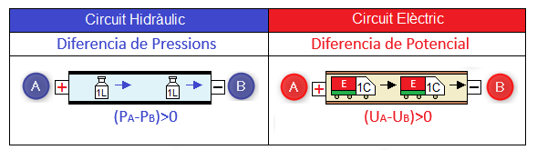
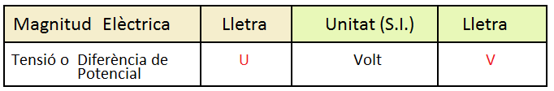
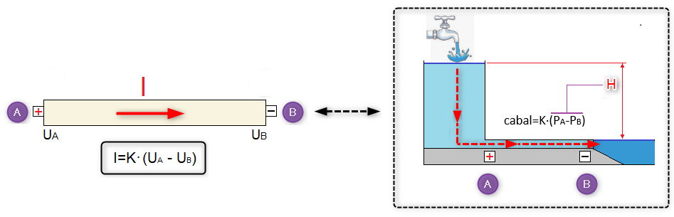
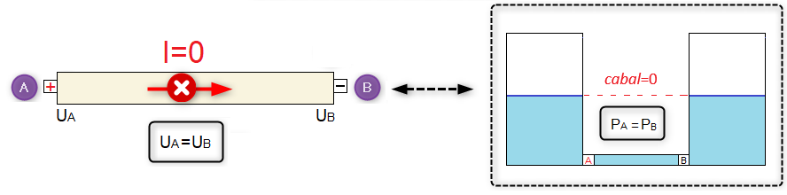
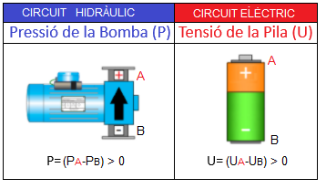
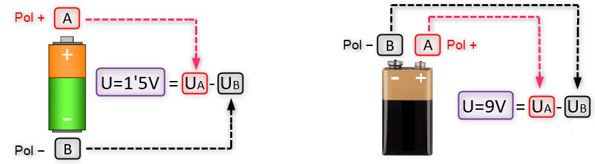
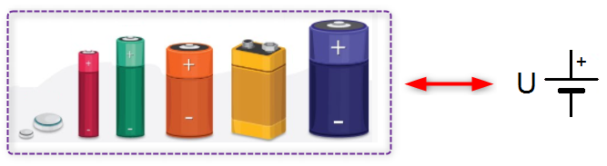

Diferència de Potencial
Si considerem que les càrregues elèctriques són una mena de fluid que es comporta de manera similar a l'aigua en un circuit hidràulic (analogia hidràulica) podem dir que aquestes, de la mateixa manera que ho fa l'aigua, es mouran des dels punt d'alta energia (+) fins als punts de baixa energia (-) i si en un circuit hidràulic l'energia en un punt X es es mesurava mitjançant la pressió (Px), en un circuit elèctric la magnitud equivalent a la pressió elèctrica s'anomena potencial elèctric (UX). Per tant, direm que les carregues elèctriques es mouen dintre d'un conductor elèctric sempre des dels llocs de potencial alt (UA) fins als punts de potencia baix (UB).

Aleshores, podem afirmar:
El moviment de les càrregues elèctriques entre dos punts d'un conductor elèctric (A i B), té el seu origen en la diferència de potencial o tensió elèctrica (U=UA-UB) entre aquests dos punts i el sentit d'aquest flux és sempre des del punt d'alt potencial o d'alta energia (punt A) fins al punt de baix potencial o de baixa energia (punt B).
Unitats

La magnitud Tensió Elèctrica o Diferència de Potencial entre dos punts es representa mitjançant la lletra U i la seua unitat en el Sistema Internacional és el Volt, que es representa mitjançant la lletra V.
Relació entre la intensitat de corrent i la diferència de potencial
Ara ens podem preguntar: com podem augmentar o disminuir la Intensitat de corrent o els Coulombs/s que circulen per un conductor? La resposta és la mateixa que es va donar respecte del cabal en un circuit hidràulic, substituint les paraules "cabal" per "intensitat de corrent" i "diferència de Pressions" per "diferència de Potencial".
La Intensitat de corrent (Coulombs/s) que circula entre dos punts A i B d'un conductor elèctric és directament proporcional a la diferència de potencial (U=UA-UB) o tensió elèctrica entre aquests dos punts. Es a dir, en augmentar la diferència de potencial entre els punts A i B (UA-UB)↑ la Intensitat de corrent (I)↑ augmentarà i si la diferència de potencial entre els punts A i B (UA-UB)↓ disminueix la Intensitat de corrent (I)↓ també ho farà.

Recordem un cas particular que succeïa en un circuit hidràulic i com s'aplica a un circuit elèctric:

No pot existir circulació de corrent (I=0) entre dos punts A i B si aquests es troben al mateix potencial, es a dir, si (UA=UB).
La Pila o Generador Elèctric

La pila té la mateixa funció en un circuit elèctric que la bomba en un circuit hidràulic, es a dir, generar la diferència de potencial entre el punt A (terminal positiu de la pila +) i el punt B (terminal negatiu de la pila , -). Per tant, podem afirmar:
La pila o generador elèctric és la responsable de generar la diferència de potencial en un circuit elèctric i per això també ho és de la intensitat de corrent (coulombs/segon) que circula pel conductor elèctric.
La tensió de la pila (U), de la mateixa manera que ho fa la pressió d'una bomba (P), indica la diferència d'energia o diferència de potencial mesurada en volts existent entre el pol positiu i el pol negatiu de la pila (veure imatge).

Simbologia
En el mercat existeixen piles amb diferents capacitats per generar diferències de potencials entre el pol positiu i el negatiu. Les tensions de les piles o bateries mes usuals són: U=1'5V, U=3V, U=4'5V, U=9V, U=12V i U=24V. Ara bé, el símbol elèctric utilitzat per representar una bateria o pila en un circuit elèctric és sempre el mateix, independentment de la seua diferència de potencial (U) i forma:
